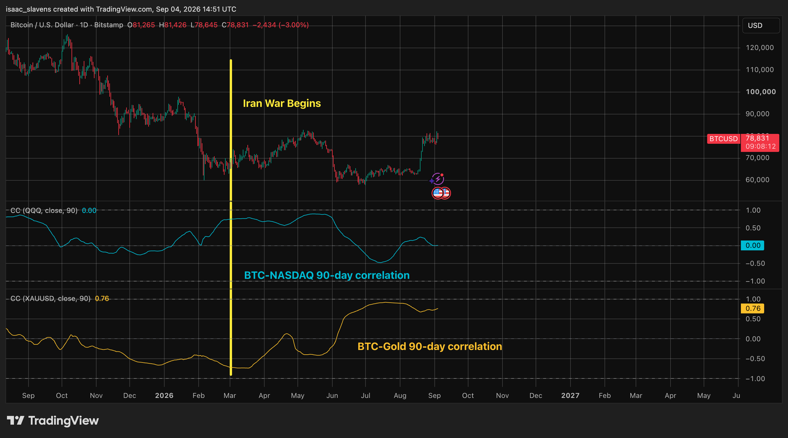
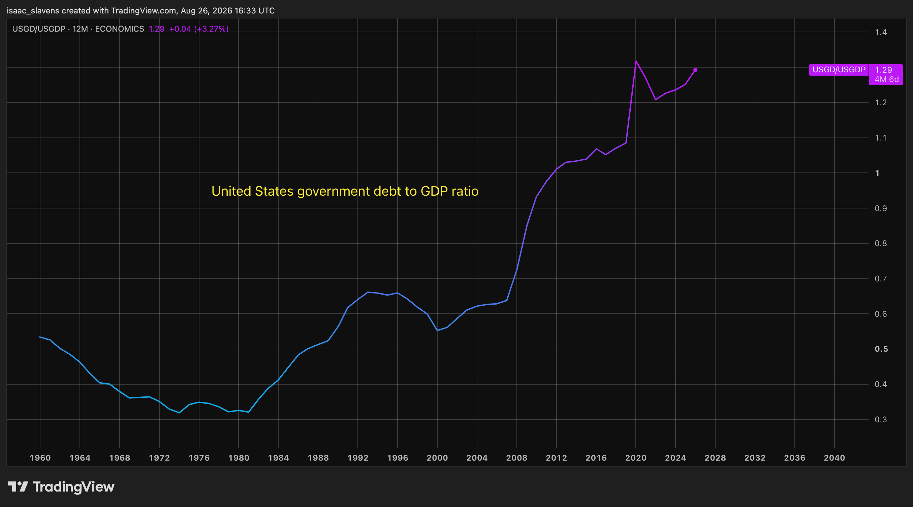

Introduction
Bitcoin is the world's only incorruptible, inalienable, and universal form of wealth preservation. It has been the most interesting topic in the financial world to me ever since I began to understand it. I look forward to presenting my understanding of the role it will fulfill in the coming decades, and perhaps convincing the reader of this asset's importance before everyone else figures it out.
As I write this, each Bitcoin is worth ~77 thousand American dollars, and the total value of the network is $1.5 trillion, which represents 66% of the total value of all cryptocurrencies.
Bitcoin Is Not Money
The uncomfortable truth about this cryptocurrency is that it’s not much of a currency at all. Bitcoin has a very strong use-case, and it could function as money in the distant future, but that potential is not a major factor driving it forward today. In order to function properly as money, Bitcoin would need stability in its exchange rate with fiat currencies, which it is far from establishing. Drawdowns of more than half its valuation still occur every four years, including in June 2026, when it closed the week below half its October 2025 valuation. Without stability, none of the three functions of money (means of exchange, store of value, unit of account), are feasible so long as viable alternatives exist. When Iran enforces tolls on ships passing through the Strait of Hormuz, Bitcoin has become their currency of choice, since it looks stable in comparison to the Rial. Its decentralized nature is doubtlessly valuable in the context of extreme fiat currency instability or political uncertainty, but these niche cases are far from sufficient to justify its valuation being in the trillions. Cryptocurrency and blockchain have established themselves beyond any doubt as valuable parts of the financial system, but it has become clear that stablecoins (which maintain 1:1 value with the United States dollar per unit) are the most accessible and logical application of blockchain technology in the context of regular payments. Bitcoin was created in 2009, and much of its structure is undoubtedly in response to the extreme quantitative easing of the 2008 financial crisis. Satoshi Nakamoto saw how fiat currencies could be rapidly devalued at a moment’s notice, should the need arise, hence he created the most inflation-proof asset in human history. Whether or not this asset ends up becoming a commonplace means of exchange or unit of account, only time will tell. However, there is much more depth to it than the ability to transfer economic value from one entity to another. The most significant and revolutionary use-case of Bitcoin is its ability to store economic value by absorbing liquidity over time. A notable shift happened at the start of the Iran war, in which Bitcoin began trading as a risk-off hedge against geopolitical uncertainty. One might assume that Iran adopting it as the Rial collapsed played a role in this reputational shift. Bitcoin historically trades as if it were a leveraged software stock, tracking the NASDAQ with higher volatility, but this changed dramatically in recent months. There is a meaningful extent to which this asset is recognized for its decentralized and permissionless nature, as the chart below demonstrates.

Bitcoin's Use-Case
Bitcoin is a perfect solution for individuals, corporations, and governments to mitigate the consequences of an inevitable restructuring of the global financial system. There is no valid alternative to the Bitcoin network as the primary hedge for monetary debasement. History has shown that financial systems are extremely resilient, and to the extent that a financial system can be viewed as an entity itself, there is nothing it wouldn't sacrifice in order to ensure long-term stability and survival. The fiscal situation in the United States represents an extreme threat that has become impossible to ignore. The term "debasement trade", which describes investors flocking to supply-restricted assets to absorb monetary expansion, has gone mainstream over the last year. The global financial system is still in the early stages of a quiet restructuring in which the dollar is no longer central. A notable shift happened in 2025, in which the total dollar amount of gold reserves held by governments surpassed that of U.S. treasury bonds. Of course, a great deal of this was a result of valuation changes, as the price of gold doubled while bond prices suffered, but much of these price changes were a result of nations increasing their stock of the former and reducing their exposure to the latter. Economics and finance are considered boring topics because 99% of the time, the systems work exactly as they are supposed to, without any crazy stories to report. The only time in recent memory that the system failed was 2008, and the trauma from that period has remained so culturally influential to this day that one would think the system still hasn't healed, but how it did so is important, and will be addressed later on in this analysis.

The American government debt to GDP ratio had been in a steady decline since WWII, which paused and shortly thereafter reversed once the gold standard was suspended. It is also evident in the chart above that this ratio accelerated during both the 2008 and 2020 recessions. There is no reason to assume that there will be a reversal in this ratio. Past a certain point, which current developments suggest has now been reached, the debt-to-GDP ratio becomes a self-reinforcing vicious cycle from which debasement is the only escape. When the economy goes through a major contraction, like it did in 2020, economic theory and practice suggests that the solution is some combination of both fiscal and monetary stimulus. In the case of 2020, the federal funds rate was sent nearly to zero, stimulus checks were sent out, funded by the government at those extremely low rates. In response to the resultant inflationary growth shock in 2021 the federal funds rate was sent back to pre-2008 levels, and the 10-year and 30-year bonds began rising gradually to this day. Yields have returned to levels which place the fiscal position of the U.S. government at a point of no return. Interest expenses incurred from government borrowing have exceeded military spending as of this year, as the Treasury doubled its bond buyback program in an effort to suppress yields. There is no realistic situation in which the U.S. government avoids defaulting on its debt while the dollar retains its value. Moreover, there is no situation in which the U.S. government can fund the interest expenses on its debt without either fiscal contraction or significant monetary expansion. The former simply would result in a recession which is resolved by the latter. Dollar devaluation does not inherently mean that the world's largest economy will cease to function properly, it just means there will need to be a gradual and healthy transition away from outdated ways of understanding how money works. Bitcoin is engineered to absorb liquidity and benefit from monetary expansion more efficiently and reliably than any other asset in the long-run.
The beauty of Bitcoin is that it is ultimately purely speculative -- you can't hold it or feel it, it almost isn't real. It can best be understood as a network of agreed-upon rules for preserving and transferring economic value in a fair and free manner. Because of this nature which no other tradable market can claim to possess, it is also the most interesting and exciting to trade through its cycles. There are no earnings reports as in equities, and there are no supply shocks as in metals -- it allows traders to consider simple market cyclicality, liquidity factors, and human psychology. It is the purest form of Keynes's metaphor of the "competitions in which the competitors have to pick out the six prettiest faces from a hundred photographs, the prize being awarded to the competitor whose choice most nearly corresponds to the average preferences of the competitors as a whole; so that each competitor has to pick, not those faces which he himself finds prettiest, but those which he thinks likeliest to catch the fancy of the other competitors, all of whom are looking at the problem from the same point of view. It is not a case of choosing those which, to the best of one's judgment, are really the prettiest, nor even those which average opinion genuinely thinks the prettiest. We have reached the third degree where we devote our intelligences to anticipating what average opinion expects the average opinion to be." (The General Theory of Employment, Interest and Money, Chapter 12)
An asset of this nature is perfectly suited for a long-term environment in which consistent monetary debasement is the only way for the system to remain afloat. The vast majority of Bitcoin's price action is driven by the liquidity environment, as is the case with gold, which is unlikely to ever change. Notably, the primary catalyst of the 2026 bear market was the hawkish Kevin Warsh's appointment to Fed Chair, as a 50% drawdown was required to price in a couple of rate hikes and the end of quantitative easing. Satoshi gave Bitcoin to the world primarily as money, but he was not opposed to the "digital gold" narrative. In fact, for most of the history of civilization, gold was the primary currency. In 2010, shortly before he vanished forever, Satoshi Nakamoto offered this thought experiment: "imagine there was a base metal as scarce as gold [lacking all of the unique properties of gold] but ... one special, magical property: - can be transported over a communications channel". Many of those who still believe gold is the only valid monetary debasement hedge often point out the exact argument that Satoshi acknowledged in this same post, which is that "an object with the automatic bootstrap of intrinsic value will surely win out over those without intrinsic value." Even if gold were not particularly scarce (like copper, for example), it would still have some value for electronics and dentistry, among others. If Bitcoin were not scarce, it would be meaningless. This is why Satoshi brings up the question: are scarcity and mechanics alone a sufficient driver of store-of-value supremacy? In the next line, he offers the simple answer, albeit with a rather humble degree of confidence: "But if there were nothing in the world with intrinsic value that could be used as money, only scarce but no intrinsic value, I think people would still take up something." We can forgive this quote's uncertainty as to Bitcoin's ability to attract capital despite a lack of intrinsic value, keeping in mind that its price was six cents when Satoshi wrote it. He was pointing out that while gold does indeed have scarcity and intrinsic value, it can not be easily transported across a "communications channel". If I may add onto his argument, it is impossible to verify the authenticity of it, how much of it exists, and how much of it will exist in the future. Bitcoin will almost certainly never replace gold, but the debasement trade is sufficiently lucrative that it will most likely leave room for two assets capable of hedging against it.